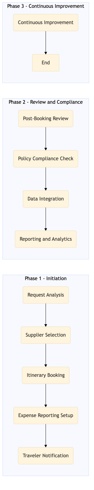

This process document outlines the steps for Agent-Assisted Complex Itinerary Booking within the TMC Travel Programme Management domain, focusing on corporate booking and servicing.
| Trigger | A travel request is received from a corporate client through the SAP Concur T2 system or Amex GBT Neo/Complete interface. |
| Outcome | The complex itinerary is successfully booked with all necessary details captured, including flights, hotels, car rentals, and other services, while ensuring compliance with corporate policies and cost controls. |
| Systems | SAP Concur T2 Amex GBT Neo/Complete Amadeus NDC Sabre GDS Travelport EVC One Key TravelAds Expedia Open World Partner Central SAP Concur Expense Amex Corporate Card SAP S/4HANA International SOS AWS SageMaker Snowflake Kafka Tableau SAP Analytics Cloud Workday |

Click to enlarge
| Step | Name & Pain Point | Role | System | Input | Output | KPI | Flags |
|---|---|---|---|---|---|---|---|
| 1.1 | Request Analysis Handling complex requests with multiple constraints | Travel Agent | SAP Concur T2, Amex GBT Neo/Complete | Travel request details (dates, destinations, budget, preferences) | Confirmed travel itinerary requirements | 100% accurate requirement capture | ⚠ Exception |
| 1.2 | Supplier Selection Supplier availability and pricing | Travel Agent | Amadeus NDC, Sabre GDS, Travelport, EVC, One Key, TravelAds | Confirmed travel itinerary requirements | Selected suppliers for each segment of the itinerary | 95% supplier satisfaction rate | ◆ Decision |
| 1.3 | Itinerary Booking Real-time availability and system integration issues | Travel Agent | Expedia Open World, Partner Central, Amadeus NDC, Sabre GDS, Travelport, EVC, One Key, TravelAds | Selected suppliers and travel details | Booked itinerary with PNR (Passenger Name Record) | 98% booking success rate | ⚠ Exception |
| 1.4 | Expense Reporting Setup Complex expense categorization | Travel Agent | SAP Concur Expense, Amex Corporate Card | Booked itinerary details | Configured expense reporting and reimbursement processes | 100% accurate expense tracking | ⚠ Exception |
| 1.5 | Traveler Notification Effective communication with travelers | Travel Agent | SAP Concur T2, Amex GBT Neo/Complete, Salesforce | Booked itinerary and expense reporting setup details | Notified traveler of booking confirmation and expense process | 95% notification delivery rate | ⚠ Exception |
| 1.6 | Post-Booking Review Continuous improvement of booking processes | Travel Agent, Travel Manager | SAP Concur T2, Amex GBT Neo/Complete, SAP S/4HANA | Booked itinerary and traveler feedback | Reviewed booking for compliance and cost optimization | 90% review accuracy rate | ◆ Decision |
| 1.7 | Policy Compliance Check Policy updates and enforcement | Travel Manager, Compliance Officer | SAP S/4HANA, International SOS | Booked itinerary and corporate travel policies | Confirmed compliance with all relevant travel policies | 100% policy adherence rate | ◆ Decision⚠ Exception |
| 1.8 | Data Integration Data quality and integration challenges | IT Specialist, Data Analyst | AWS SageMaker, Snowflake, Kafka, Tableau | Booked itinerary data | Integrated and analyzed travel data for reporting and optimization | 95% data accuracy rate | ⚠ Exception |
| 1.9 | Reporting and Analytics Insufficient reporting tools | Travel Manager, Data Analyst | SAP Analytics Cloud, Tableau | Integrated travel data | Generated reports and insights for decision-making | 85% report utilization rate | ⚠ Exception |
| 1.10 | Continuous Improvement Resistance to change | Travel Manager, IT Specialist | SAP Concur T2, Amex GBT Neo/Complete, Workday | Process feedback and analytics insights | Implemented improvements to booking processes and systems | 80% process improvement rate | ◆ Decision |